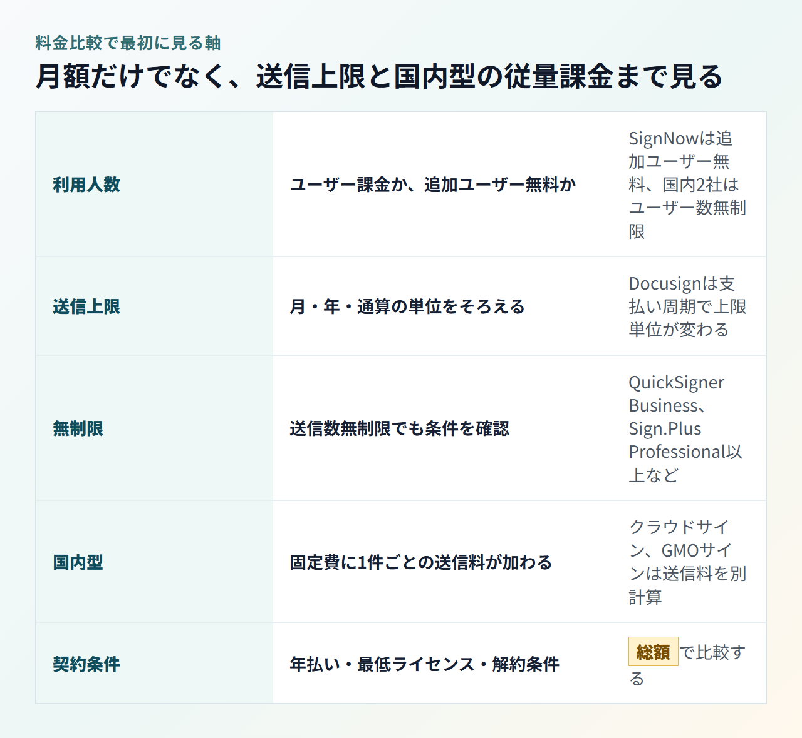
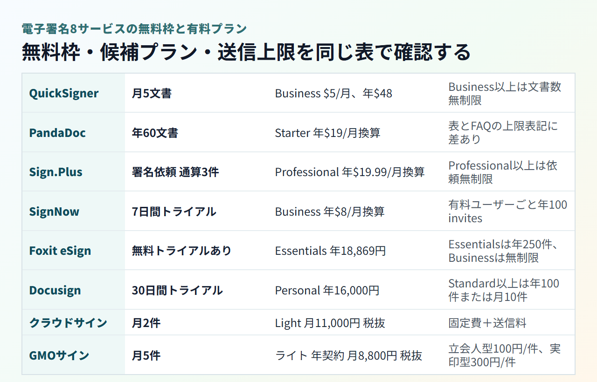
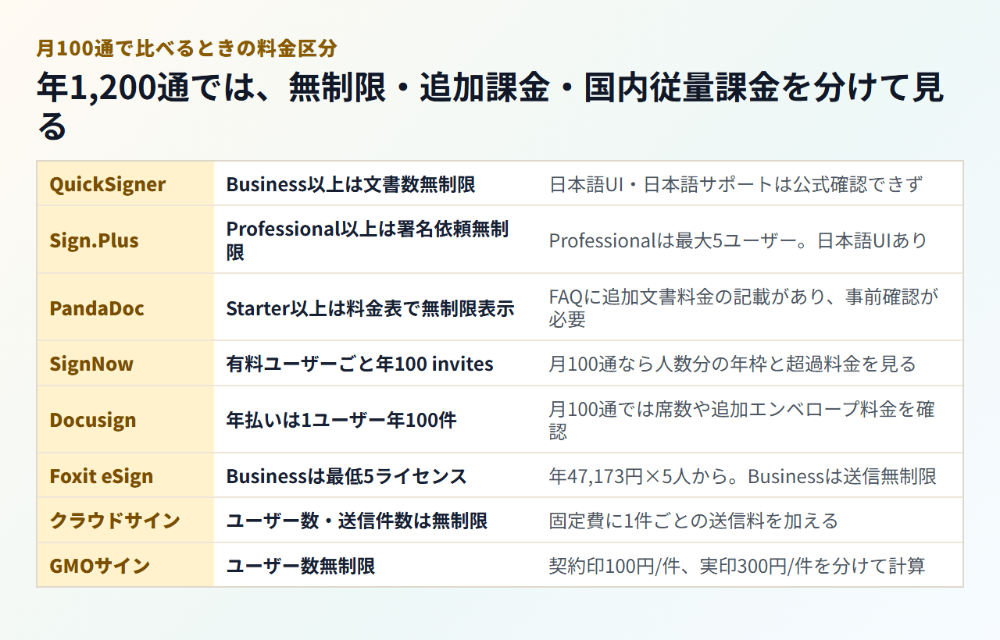

電子署名サービスの料金比較｜無料枠と送信数・利用人数別のプラン選び
電子署名サービスは、表示されている月額だけでは総額を比べられません。ユーザー数に応じて増える料金に、送信上限や1件ごとの送信料が重なると、安く見えたプランでも利用量に合わないことがあります。
まず、自社が月5通・30通・100通のどこに近いかを確認してください。本記事では、8サービスの公式情報をもとに、無料枠で足りる範囲と有料プランを選ぶ基準を整理します。なお、未契約サービスについては、実体験ではなく公開されている料金条件をまとめています。
結論：送信数と利用人数を決めると候補を絞れる
月5通までなら無料枠、月30通以上なら文書数無制限の有料プランが候補です。 複数人で管理する場合は、1ユーザーあたりの料金と最低ライセンス数まで計算に含めます。
契約前に、次の4点を書き出しておくと比較条件がぶれません。
- 直近3か月の月間送信数
- 管理画面を利用する人数
- 年払いができるか
- 日本語UIと日本語サポートが必要か
月5通まで：無料枠から確認する
QuickSignerと電子印鑑GMOサインは月5件まで無料です。PandaDocは年間60文書なので、毎月均等に送るなら月5通相当ですが、月ごとの枠ではありません。
月30通前後：年間上限と無制限プランを比べる
月30通は年間360通です。Docusignの年100通とFoxit eSign Essentialsの年250通では足りません。SignNowは追加ユーザーが無料で、各ユーザーの年100 invitesをアカウント内で共有できるため、4ユーザー分の枠があれば年間360通をまかなえます。1人で運用する場合は、QuickSigner BusinessやSign.Plus Professionalなどの無制限プランが比較の中心です。英語UIで運用できるならQuickSigner、日本語UIが必要ならSign.Plusが候補になります。ただし、どちらも日本語での問い合わせ対応は公式に確認できません。
月100通前後：追加送信料と最低ライセンス数まで含める
年間1,200通になると、上限超過後の追加料金や個別見積もりが総額を左右します。Foxit eSign Businessのように送信数が無制限でも、最低5ライセンスという条件があれば、1人利用には割高です。日本語サポートが必須なら、英語問い合わせが前提の海外サービスだけでなく、クラウドサインやGMOサインの固定費と送信料も試算します。
電子署名の料金は3つの課金方式で決まる
比較する3つの軸は、ユーザー数、送信上限、上限超過後の料金です。 これに加え、クラウドサインやGMOサインでは、固定費に1件ごとの送信料を足す国内型の料金体系も確認します。
ユーザー数に応じて増える料金
PandaDocとDocusignは、基本的にユーザー単位で料金が増えます。送信担当が1人でも、閲覧・管理するメンバー全員に有料席が必要かを確認してください。SignNowは追加ユーザー自体が無料なので、ユーザー単位で料金が増える前提では計算しません。
送信通数・エンベロープ上限で増える料金
Docusignは年払いで1ユーザー年100エンベロープ、月払いで月10エンベロープです。SignNowは各ユーザーに年100 invitesが割り当てられ、全ユーザー分をアカウント内で共有します。追加ユーザー自体は無料です。Foxit eSign Essentialsは年250エンベロープなので、上限の単位をそろえて比べます。
文書数無制限でも確認したい条件
QuickSigner BusinessとSign.Plus Professional以上は送信数が無制限です。ただし、APIクレジットや最低ライセンス数は別条件です。クラウドサインとGMOサインはユーザー数無制限でも、固定費に送信料が加わります。

電子署名8サービスの無料枠と有料プラン
同じ月額でも、送れる件数と利用人数は異なります。 以下では「無料枠」「候補となる有料プラン」「送信上限」の順に整理します。

QuickSigner：無料は月5文書、有料Businessは文書数無制限
- Freeは月5文書まで。1回の依頼に含められるのは3署名者・1文書で、PDFのみです。
- Businessは月払い$5/ユーザー、年払い$48で、文書数は無制限です。
- Professionalは月払い$15/ユーザー、年払い$144。SMSのOTP認証や一括送信を含みます。
- BusinessとProfessionalには14日間の無料トライアルがあります。
無料枠の1依頼あたりの制限と、有料プランの年払い総額を確認できます。
PandaDoc：無料は年間60文書、Starter以上は上限表記に注意
- Free eSignは年間60文書、1文書あたり受信者2人、テンプレート5件です。
- Starterは月払い$35/ユーザー、年払いは月額$19換算。Businessは月払い$65、年払いは月額$49換算です。
- 有料プランの無料トライアルでは、Business・Enterprise向け機能に使うusage creditsが10件付与されます。
- 料金表はStarter以上を無制限と表示する一方、同じ公式ページのFAQには追加文書料金の記載があります。含まれる上限値は公開されていないため、無条件の無制限とは扱いません。
年払いへの切り替えと、契約前に適用される文書上限を確認するためのリンクです。
Sign.Plus：無料は通算3件、Professional以上は署名依頼無制限
- Freeの署名依頼は通算3件で、毎月3件ではありません。
- Personalは月払い$14.99、年払いは月額$9.99換算で、月10件までです。
- Professionalは月払い$29.99、年払いは月額$19.99換算。最大5ユーザーで署名依頼は無制限です。
- Personal以上には無料トライアルがあります。
日本語の料金ページで、表示通貨と月払い・年払いの差を確認できます。
airSlate SignNow：追加ユーザーを含む各ユーザーに年間100 invites
- 恒久無料プランはなく、7日間の無料トライアルがあります。
- Businessは年払いで月額$8、月払いで$20。Business Premiumは$15・$30です。追加ユーザー自体に料金はかかりません。
- 署名依頼は、無料で追加したユーザーを含む各ユーザーに年100 invitesが割り当てられ、人数分の枠をアカウント内で共有します。超過分は追加課金です。
契約前にSignNowの料金導線へ進み、利用人数で増える年間invite枠と想定送信数を照合してください。
Foxit eSign：個人向けは年間上限、無制限プランは最低席数あり
- Essentialsは18,843円/ユーザー/年で、1ユーザー専用・年250エンベロープです。無料トライアルがあります。
- Businessは47,108円/ユーザー/年。エンベロープは無制限ですが、最低5ライセンスが必要です。
- 16ライセンス以上のVolume Licensingは個別見積もりです。
- 表示額に適用税を含むか、注文時の最終総額は公開情報だけでは確認できません。
Foxitの日本向け公式ページから、eSign製品の年間料金と最低ライセンス数を確認してください。
Docusign：月払いと年払いで送信上限の単位が変わる
- 恒久無料の送信プランはなく、30日間の無料トライアルがあります。
- Personalは税別で年16,000円または月1,990円、月5エンベロープです。
- Standardは税別で年39,600円/ユーザー、Business Proは税別で年63,600円/ユーザーです。
- StandardとBusiness Proは、年払いなら1ユーザー年100エンベロープ、月払いなら月10エンベロープです。
年払いと月払いを切り替え、価格だけでなく送信上限の単位も確認できます。
クラウドサイン：無料は月2件、有料は固定費と送信料
- Freeは1ユーザー・月2件までです。
- Lightは月額11,000円（税別、税込12,100円）、Corporateは月額28,000円（税別、税込30,800円）で、別途送信料がかかります。
- 料金ページには別の無料トライアルの記載がありません。
- 送信料は同じ公式ページ内で税別220円と税別200円の表記が併存しています。適用単価は契約前に問い合わせが必要です。
有料プランは1年契約なので、月額表示と年間の支払総額を分けて確認してください。
電子印鑑GMOサイン：無料は月5件、署名方式で送信料が変わる
- お試しフリープランは1ユーザー・月5件までで、契約印タイプのみです。
- ライトは年間契約で月額8,800円（税別、税込9,680円）、単月契約で9,500円（税別、税込10,450円）。ユーザー数は無制限です。
- 料金ページには、お試しフリープランとは別の無料トライアルの記載がありません。
- 送信料は税別で、契約印タイプが1件100円、実印タイプが1件300円です。
契約方式を決めてから、基本料金に件数分の送信料を加えてください。
月5通なら無料枠で足りるかを先に比べる
1人で月5通なら、QuickSigner、GMOサイン、PandaDocが無料で使える候補です。 ただし、年間上限と月間上限では繁忙月への対応が変わります。
毎月5通を均等に送る場合
QuickSignerは月5文書、GMOサインは月5件まで無料です。PandaDocは年間60文書なので、毎月5通を均等に送れば枠内に収まります。一方、クラウドサインは月2件、Sign.Plusは通算3件のため不足します。
特定の月だけ5通を超える場合
PandaDocの年間枠は、月ごとの送信数に波がある場合に候補になります。QuickSignerとGMOサインは月間枠なので、未使用分を翌月へ回せる前提では計算しません。Docusign Personalの月5エンベロープは有料プランです。
月30通なら文書数無制限と年間上限を見分ける
月30通は年間360通です。 1人利用では、QuickSigner BusinessやSign.Plus Professionalなど、送信数無制限のプランが比較の中心になります。管理画面の日本語が必要ならSign.Plus、英語UIでも料金を優先するならQuickSignerを先に比べます。
1人で毎月30通を送る場合
QuickSigner Businessの年払いは$48、Sign.Plus Professionalは年払いで月額$19.99換算です。QuickSignerは日本語UIと日本語サポートを公式に確認できません。Sign.Plusは日本語UIに対応しますが、日本語での問い合わせ対応は未確認です。PandaDoc Starterは日本語UIがなく、送信上限の表記も一致しないため、契約条件を問い合わせるまでは候補として確定できません。Docusignの年100通とFoxit eSign Essentialsの年250通は不足します。
複数人で年間上限を分け合う場合
SignNowは各ユーザーに年100 invitesが割り当てられるため、年間360通なら4ユーザー分の枠が必要です。追加ユーザー自体は無料で、全ユーザーの枠をアカウント内で共有します。Docusignは必要な席数を増やすと枠も増えますが、1ユーザーあたりの料金を含む合計額で判断します。国内2サービスは基本料金に360件分の送信料を加えます。
QuickSignerはBusinessの年払い総額と、送信以外の機能制限を確認してください。
Sign.PlusはProfessionalのユーザー上限と年払い価格を確認できます。
月100通なら追加送信料と最低ライセンス数まで計算する
月100通では年間1,200通です。 無制限の表示だけでなく、最低ライセンス数、超過料金、契約形態を含めた年間総額で判断します。日本語での問い合わせが必須なら、国内2サービスの見積もりも同じ条件で取ります。
1人または少人数で月100通を送る場合
QuickSigner BusinessとSign.Plus Professional以上は送信数無制限です。ただし、QuickSignerは日本語UI・日本語サポートとも未確認です。Sign.Plusは日本語UIに対応する一方、日本語での問い合わせ対応は確認できていません。PandaDocは日本語UIがなく、FAQとの表記差もあるため、営業・サポートへ確認するまで総額を確定できません。SignNowとDocusignは標準の年間枠を超えるので、追加枠の見積もりが必要です。
5人以上の組織で月100通を分担する場合
Foxit eSign Businessは最低5ライセンスで、表示年額は47,108円×5人です。適用税を含む最終総額は注文前に確認します。クラウドサインとGMOサインはユーザー数無制限ですが、1,200件分の送信料を加えます。GMOサインは契約印タイプと実印タイプを分けて計算してください。

大口利用では一括送信や管理機能、日本語UI、問い合わせ言語も判断材料に含めます。
日本から払うときは通貨・カード・請求書を確認する
海外サービスはUSDやEURなどの外貨とJPYが混在し、利用できるカードや請求書の扱いも異なります。 経費処理まで見据えて決済方法を確認します。
USD建てとJPY建てで変わる支払額
QuickSigner、PandaDoc、SignNowはUSD建てです。Sign.Plusは地域や選択によってUSD・EUR・CHF・GBPで表示され、日本語ページでもEUR表示になる場合があります。1ドル=157円換算の目安で見ると、QuickSigner Businessの年払い$48は約7,536円です。PandaDoc Starterの年払い$228は約35,796円になります。為替で変動し、税やカード会社の為替手数料は含みません。Docusignは税別のJPY、Foxit eSignはJPYで表示され、クラウドサインとGMOサインも円建てです。
クレジットカード・PayPal・銀行振込の対応
Sign.PlusはJCBを含む主要カード、PayPal、Apple Pay、Google Payに対応しています。Foxitは日本向けページにJCBとPayPalを含む決済ロゴを掲載しています。PandaDocはVisa・Mastercard・American Express・PayPal、SignNowはカード・PayPalです。QuickSignerはオンライン決済に対応しますが、利用できるカードブランドは公式に公開されていません。
クラウドサインは銀行振込・口座振替・カード、GMOサインは銀行振込・カードに対応しています。
請求書・invoiceを取得する方法
PandaDoc、SignNow、Sign.Plus、Docusignは管理画面から請求情報やinvoiceを確認できます。QuickSignerは支払い後にinvoiceを自動発行。クラウドサインとGMOサインは国内の請求書払いに対応しています。消費税やインボイス制度上の扱いは、契約主体と請求書をもとに税理士に確認してください。
Docusignの日本向けページでは、円建て価格と年払い・月払いを切り替えて確認できます。
年払い・超過料金・解約前に確認したいこと
年払いの月額換算が安くても、送信枠が年間単位になり、途中解約で残額が戻らない場合があります。 契約期間と超過時の扱いまで読んでから申し込みます。
年払いの月額換算と契約期間は別に見る
Docusignは支払い周期によって上限の単位が変わり、SignNowも年間invite枠です。クラウドサインの有料プランは、月額表示でも1年契約です。GMOサインの年間契約は、途中解約すると残月分が請求されます。
送信上限を超えたときの扱いを確認する
上限型のSignNowとDocusignは、超過後の追加料金を含めて見積もります。PandaDocは料金表とFAQの記載が一致していません。無制限プランでも、APIや自動化の利用枠は別に確認が必要です。
取引先にも料金やアカウント登録は必要？
PandaDoc、SignNow、Sign.Plus、Foxit eSign、Docusign、QuickSignerでは、一般的な署名者はアカウントを作らずに署名できます。送信者側のプラン料金と、取引先側の操作負担を分けて考えられます。
解約・ダウングレード後に文書を取り出せる？
SignNowは期限切れ後も既存文書と監査証跡を閲覧・ダウンロードできます。QuickSignerは2年以内なら、完了文書の読み取り専用アクセス再開を申請できます。Foxit eSignは解約後6か月保持されますが、通常はアクセスできません。PandaDocはFree移行後も既存文書を維持します。
GMOサインは単月・年間契約の差と、年間契約を途中解約した場合の残月分を確認してください。
まとめ：月の送信数と利用人数を決めてから料金ページを見る
最初に月の送信数と利用人数を決め、無料枠、年間上限、無制限、固定費＋従量料金を同じ条件で比べます。 表示月額だけで候補を決めるのは避けてください。
- 直近3か月の送信通数を数える
- 管理画面を使う人数を決める
- 月払いと年払いを分け、超過料金を足す
- 料金で2〜3社に絞り、機能、日本語UI、問い合わせ言語を確認する
月30通以上を1人で送るなら、Businessの年払い総額と機能範囲を確認してください。
複数人で使うなら、Professionalのユーザー数と署名依頼が無制限となる条件を照合してください。